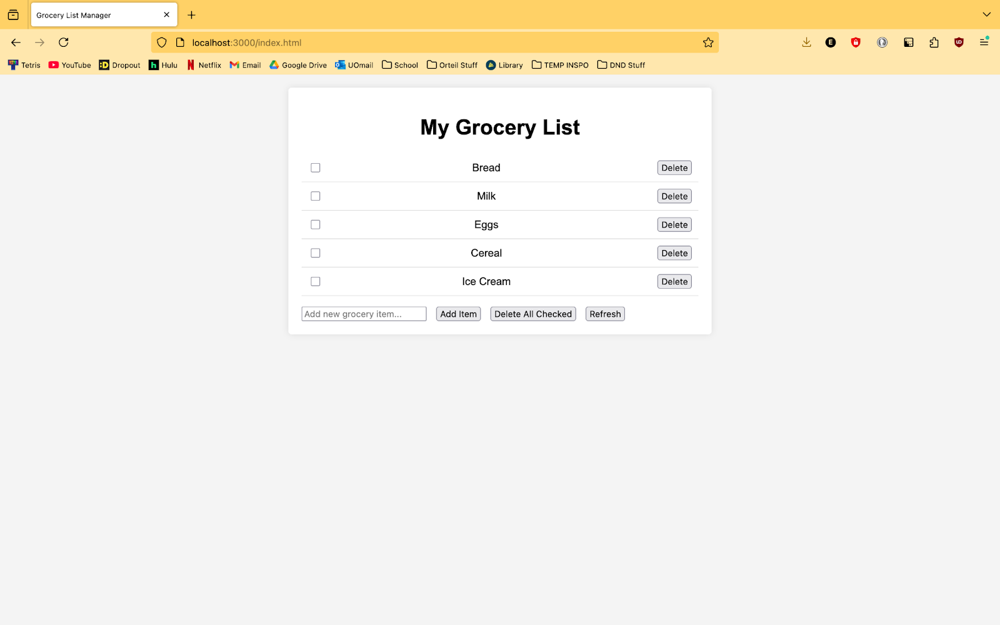

Grocery List Manager
A grocery list manager. While running, the server holds a grocery list that can be edited in one of several: items can be added, items can be deleted, items can be “checked” via checkboxes, and checked items can subsequently be deleted. The underlying code uses a simple class system to create and manage new groceries and the list as a whole, and it interfaces with an html frontend hosted locally on a node.js server.